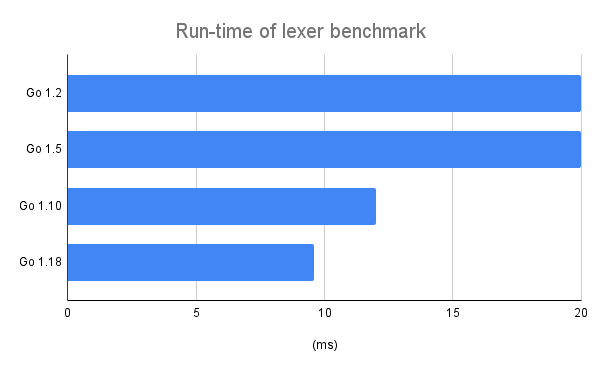
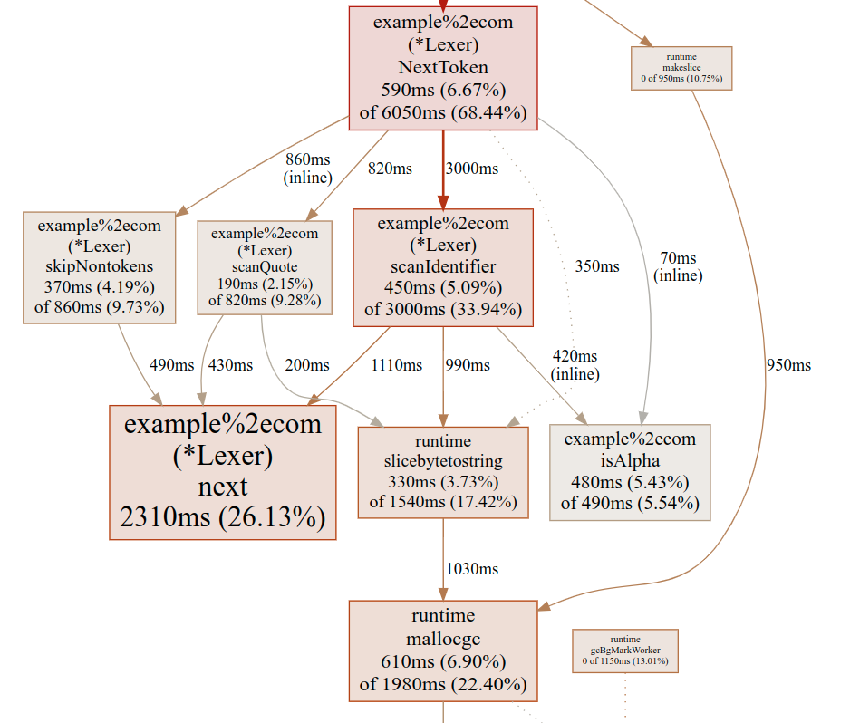
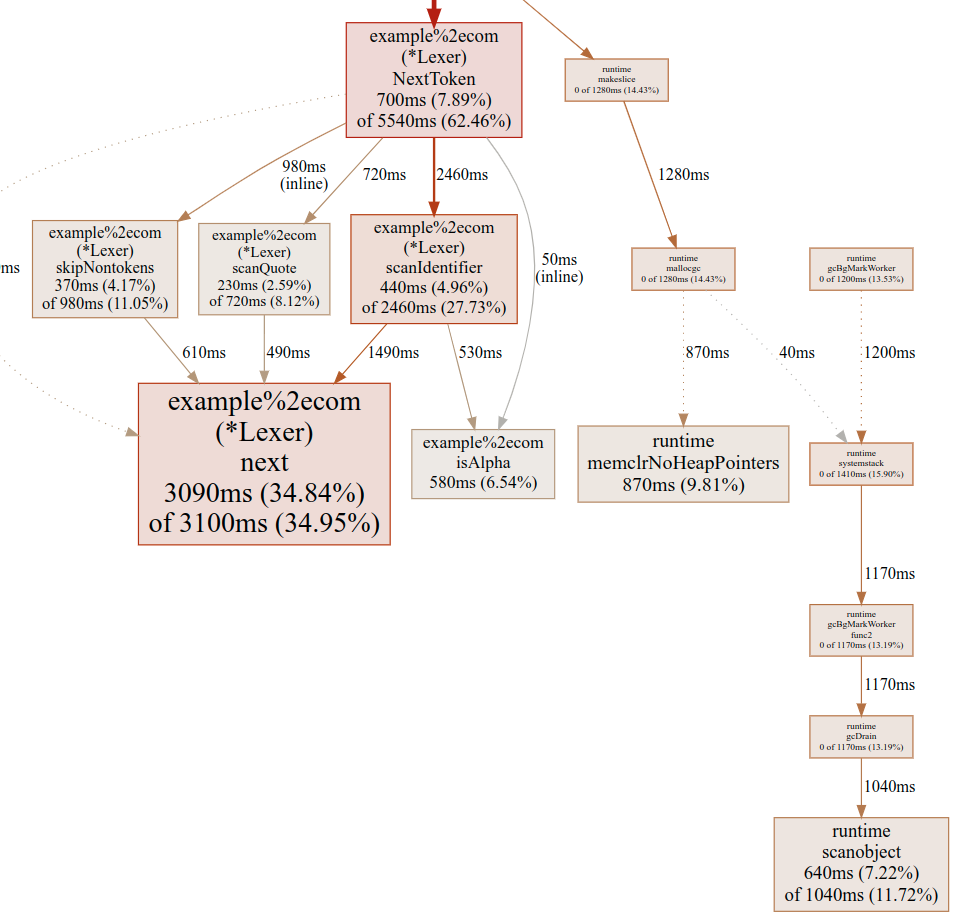
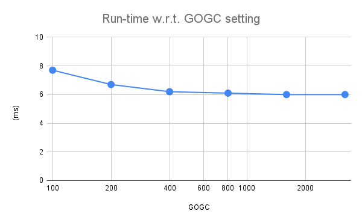

It's been a while since I've last rewritten my favorite lexical analyzer :-) That post is the last in a series implementing a lexer for the TableGen language in a variety of programming languages, using multiple techniques. The last lexer written, in Go, was very fast indeed - processing 1 MiB of source in about 20 milliseconds.
The other day I started wondering whether Go compiler improvements from the last few years made this code run any faster. Back in 2014 I measured it with Go 1.2, and now Go 1.18 is out. So I tried (on the same machine) with some newer Go versions; the full code for this is still here, and the benchmark is run as follows [1]:
$ TDINPUT=input.td go test -bench=Preall -benchtime=5s
These are the results:
Go 1.5 is comparable to 1.2, but by 1.10 there was a significant improvement in performance, and a further improvement in later versions. The code produced by Go 1.18 is more than twice as fast as the original lexer. Now it takes only ~9.6 ms to process the same 1 MiB of TableGen source!
Looking deeper into the performance of this lexer
This got me curious - what does the lexer spend its time on? Since Go has fantastic tooling for performance profiling, time to whip up some flags... This will be for the most recent version of Go (1.18):
$ TDINPUT=input.td go test -cpuprofile cpu.out -bench=Preall -benchtime=5s
...
# --nodefraction tells pprof to ignore nodes that take less than 5% of the
# total time - this significantly reduces the clutter in the produced graph
$ go tool pprof --nodefraction=0.05 ./example.com.test cpu.out
...
(pprof) web
Here's the important part of the profile:
As expected, the next function is very heavy in the profile, as it should be, since this is the main code taking characters from the input stream and making them ready for the lexer to process:
func (lex *Lexer) next() {
if lex.nextpos < len(lex.buf) {
lex.rpos = lex.nextpos
// r is the current rune, w is its width. We start by assuming the
// common case - that the current rune is ASCII (and thus has width=1).
r, w := rune(lex.buf[lex.nextpos]), 1
if r >= utf8.RuneSelf {
// The current rune is not actually ASCII, so we have to decode it
// properly.
r, w = utf8.DecodeRune(lex.buf[lex.nextpos:])
}
lex.nextpos += w
lex.r = r
} else {
lex.rpos = len(lex.buf)
lex.r = -1 // EOF
}
}
Assuming that most characters in the stream are within ASCII bounds, what this function does on each call is very little. FWIW, it's very similar to how the inner loop of Go's own text/scanner package works.
But notice the 16.5% spent on slicebytetostring - what is that all about? Note that it's invoked from several scan* methods. This has to be the string conversion of buffer slices, e.g. from scanIdentifier:
return Token{IDENTIFIER, string(lex.buf[startpos:lex.rpos]), startpos}
In Go, strings are immutable while []byte is mutable; the two cannot safely alias. Therefore, when we have some b []byte and we do string(b), Go allocates a copy of the slice to a new location and creates a string header to point to it.
We can verify this by running memory profiling and looking at the allocations:
$ TDINPUT=input.td go test -memprofile=mem.mprof -bench=Preall -benchtime=5s
...
$ go tool pprof --alloc_objects example.com.test mem.mprof
...
(pprof) list scanIdentifier
Total: 27388406
ROUTINE ======================== example%2ecom.(*Lexer).scanIdentifier
21501647 21501647 (flat, cum) 78.51% of Total
. . 238:func (lex *Lexer) scanIdentifier() Token {
. . 239: startpos := lex.rpos
. . 240: for isAlpha(lex.r) || isDigit(lex.r) {
. . 241: lex.next()
. . 242: }
21501647 21501647 243: return Token{IDENTIFIER, string(lex.buf[startpos:lex.rpos]), startpos}
. . 244:}
. . 245:
. . 246:func (lex *Lexer) scanNumber() Token {
. . 247: startpos := lex.rpos
. . 248: for isDigit(lex.r) {
As expected, many allocations come from the suspected line. Looking back at the CPU profiling graph, we also see that much of the run-time of slicebytetostirng is spent on the allocation (mallocgc). This is actually a good clue to the stark performance improvement in Go since 1.2; while the compiler certainly became better since then (especially with the register-based ABI introduced in 1.17), it didn't improve that much. What did improve a whole lot is the garbage collector; many allocations mean lots of heap to scan and track, and lots of garbage to clean up.
Avoiding allocations with sub-strings
Before we move on, let's get one thing out of the way. There are all kinds of tricks you can play in Go using unsafe to explicitly alias byte slices and strings and thus avoid allocations; this is even done in the standard library. I'll leave this topic out of this post and may cover it separately in the future.
I did wonder about the cost of these allocations, though; what if we avoid all the copies? At the moment, the lexer's API is such that it takes a []byte as input:
func NewLexer(buf []byte) *Lexer
And the tokens we return have string values:
type Token struct {
Name TokenName
Val string
Pos int
}
What if we created a lexer with a string input instead? Since Go strings are immutable, subslices alias each other and are trivial to create and pass around; consider this code sample:
s := "hello there"
s2 := s[6:]
When s is created, it allocates an 11-byte sequence of bytes and creates a 2-word string header in s: a pointer to the sequence of bytes and a len field with the value 11. When the second line is run, Go just creates a new string header that points into the same byte buffer (with offset 6) and length 5. There are no allocations (string headers are typically created on the stack just like integers).
So I went ahead and rewrote the lexer using this different API; the code changes are pretty minor and the full code is available here. The scanIdentifier method now looks like this:
func (lex *Lexer) scanIdentifier() Token {
startpos := lex.rpos
for isAlpha(lex.r) || isDigit(lex.r) {
lex.next()
}
return Token{IDENTIFIER, lex.buf[startpos:lex.rpos], startpos}
}
Note there's no string(...) cast for the token value; since lex.buf is already a string in this version, that wouldn't be necessary. Instead, we just return a string slice, which creates a new 2-word header (instead of allocating a new string and copying the data into it).
If we benchmark this version, it runs in 7.7 ms for our input, about 20% faster.
Is this a good API though?
OK, so we found a way to further improve the performance of the lexer by taking a string input; is this API useful though? Is it common for users of a lexer to have a fully formed string? To be fair, the question applies equally to the existing []byte API. IMHO, in most cases the answer is it depends. If the input to parse is already in memory (say, it was entered into some sort of text box in your GUI), then yes, string is fine in an API. More typically, though, this data is read from somewhere.
Go has useful I/O interfaces like io.Reader; this interface encapsulates "a place we read data from", and this data is typically read incrementally; e.g. you don't slurp the whole input file in a single go, but read it in chunks as needed. My old-ish SSD has read speeds in the order of 500 MiB / sec, meaning that a 1 MiB file will take about 2 ms to read from disk. If we really care about performance, overlapping this read with lexing makes sense. But this brings us to a io.Reader based API, where our substring optimization won't really work.
Let's see how Go itself does it; the text/scanner package is initialized thus:
func (s *Scanner) Init(src io.Reader) *Scanner
And to obtain the text of a token, you call TokenText, which returns a string. If we look under the hood, TokenText does the equivalent of string(some []byte buffer), which incurs an allocation and copy.
When the API is io.Reader, there's really no choice for this, though. It's really hard to safely return a string that aliases part of a []byte buffer accumulated from reading some external source. This is what other standard library package do as well - io.Reader input is very idiomatic.
The Go compiler itself has a lexical scanner in src/cmd/compile/internal/scanner.go, and it also takes an io.Reader (in its init method); naturally, it also has to allocate and copy literal values with a string(...) conversion (these are stored in its lit field).
Garbage Collector
We're not done yet. Let's look at the profile of the string version, using the same profiling invocation as before:
We see that our Lexer methods no longer allocate heap data - that's good! We can prove this further by looking at memory profiling or the compiler's escape analysis with -gcflags="-m" - I'll leave this as an exercise for diligent readers.
That said, the garbage collector (GC) still clearly runs, taking non-trivial %s of CPU, as we can see from the right side of the graph. Why does this happen?
This is a good example of why benchmarking is tricky, particularly in GC'd languages. The Go GC is concurrent, running "silently" alongside our application whenever it sees fit. In benchmarking situations, this often depends on the nature of the specific benchmark; specifically, in our benchmark the top-level function tokenizeAllPrealloc is invoked in a loop. This function pre-allocates a slice of 200k tokens with make. Each Token in our lexer occupies 4 words, which is 32 bytes on my 64-bit machine. Overall, the pre-allocation of the token slice takes somewhere on the order of 6.4 MiB. Running in a benchmarking loop for 5 seconds results in over 700 cycles, for a total of 4.5 GiB of heap data (disregarding any additional heap the benchmarking machinery uses) - which is a lot!
Go lets us control GC behavior with the GOGC env var, which sets the percentage of heap growth that triggers a collection cycle. The default is 100, which means a cycle is triggered when the heap doubles. If we use GODEBUG=gctrace=1 to trace GC invocations, we'll see that the GC runs over 700 cycles during our benchmark; clearly, this affects performance.
What happens if we try to tweak GOGC? Here's a chart for different values:
The fastest run of ~6 ms is achieved with GOGC=1600 and stays stable thereafter. Using tracing again, we see that with this setting the GC only runs ~50 times during the 5 sec benchmark, compared to 700+ previously. FWIW, disabling GC entirely with GOGC=off produces a slightly slower run-time at 6.5 ms (there's quite a lot of data here, so an overly large heap may occasionally lead to swapping).
Does any of this matter? This depends on your application! Admittedly, we're deep in the weeds here, trying to shave off sub-milliseconds from fully lexing a large input file. If you care about performance at this level of granularity, it's very likely that you'll consider the full lifecycle of your application and will have the GC tuned already.
As we've seen with the stark performance improvements from older versions of Go, the GC has improved a lot. And it keeps improving! Right now an accepted proposal aims to add more control for users with a new GOMEMLIMIT var. This is likely to land in the next Go version (or the one after it).
A longer term proposal to add arenas to Go is also on the table. This permits much finer-grained memory control, and is particularly suited for programs like compilers or other users of lexical analysis. Such programs have a lifecycle that's very suitable for arenas - you allocate a bunch of data per phase, and then at the very end you release everything in one step.
Conclusion
This post discussed some potential optimizations to a lexical scanner written in Go. It touched upon the relative efficiency of converting byte slices to strings vs. taking substrings, discussed some strategies w.r.t. API design in Go, and even got into optimizing GC behavior.
I'm pleasantly surprised at how fast lexical scanning in Go is. Even the copying version without GC tuning takes 9.6 ms to process 1 MiB of input source - that's over 100 MiB /sec! Depending on where your source is stored, this could be almost as fast as, or faster than your CPU can read the source into memory. With API changes and GC tuning we were able to improve this by a further 37% to 6 ms, though the specifics here depend on your actual application. Compared to our original version compiled with Go 1.2, the new lexer is more than 3 times as fast!
Update (2022-05-24): The in-development version of Go (1.19) runs this benchmark even faster at 5.6 ms (with GOGC=1600)! Go 1.19 should be released in August.
Update (2023-06-02): Today's in-development version of Go (1.21) runs this benchmark in 4.5 ms (with GOGC=1600)! Go 1.21 should be released in August 2023, but you can try it today with gotip.
| [1] | To run this with Go 1.5 I had to comment out the t.Run wrapper in the tests since this method did not exist in 1.5 yet; the tests still pass just fine, but in case of failure the reporting would be less helpful. Also note the TDINPUT environment variable. This is just to reuse the large-ish input file in multiple places without having to commit it to Git many times. |